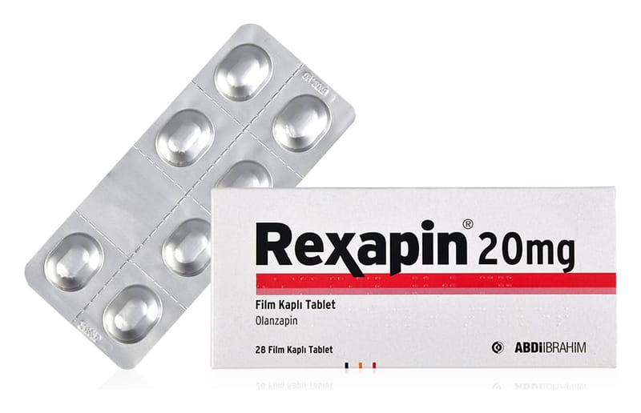

Rexapin 20 mg Film Kaplı Tablet, 56 Adet

Ne için kullanılır
KT · Bölüm 1REXAPİN 20 mg olanzapin içeren 28 ve 56 tabletlik blister ambalajda sunulan film kaplı tablettir.
REXAPİN antipsikotikler adı verilen bir ilaç grubuna aittir ve aşağıdaki durumların tedavisinde kullanılır: • Gerçekte var olmayan şeyleri duymak, görmek veya hissetmek, yanlış inanışlar, anormal şüphecilik, içine kapanmak gibi belirtilerin eşlik ettiği bir hastalık olan şizofreninin tedavisinde kullanılır. Ayrıca bu hastalığı yaşayan hastalar kendilerini depresif, endişeli veya gergin hissedebilirler.
• Heyecan ve coşku hali durumları görülen, orta ve şiddetli manik dönemler,
REXAPİN’in manik dönemde (heyecan veya coşku belirtileri olan durum) olanzapin tadavisine cevap veren bipolar bozukluğu olan hastalarda, bu belirtilerin tekrar oluşmasını önlediği gösterilmiştir.
REXAPİN benzer durumların tedavisi için hekimin uygun gördüğü durumlarda 13-17 yaş arasındaki ergen hastalarda da kullanılabilir.